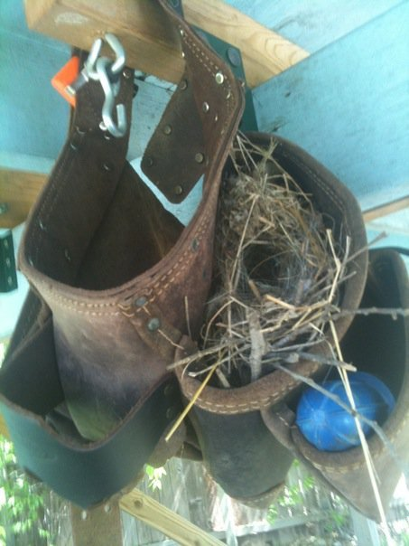

About Me
Hi, I'm Kathy. I'm formerly from Austin, TX and just moved to Atlanta, GA to pursue training (and eventually an awesome carreer) in Web Development. I love books, my wife, and my dogs (not necessarily in that order!).
I left school in 1999 and have been working my way up the customer service ladder since then. I recently realized that if I wanted to continue having upward mobility, I needed to add some more technical skills to my resume. After careful consideration, I decided that a career in Web Development was one that would be both engaging and profitable. I researched the available options for training, from four year CS programs to three month crash courses in front-end development. After all of that reserch, it was pretty clear to me that the Ga Tech Coding Bootcamp was the right fit for me and, well, here I am!
Connect With Me